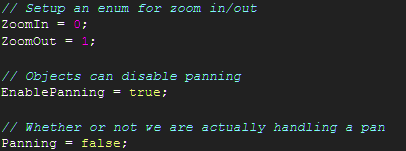
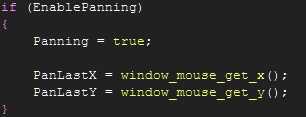
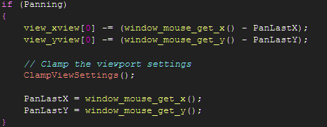
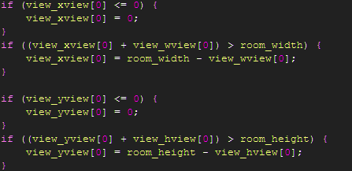
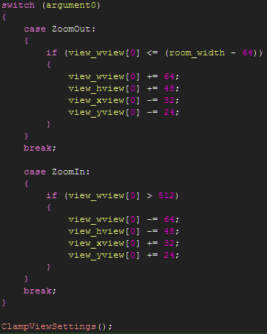
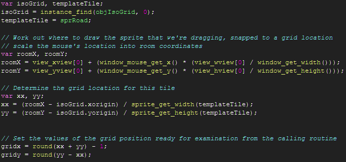

Tutorial
Page 5 of 6
Using The Mouse
In this section we will cover the scripts used to manipulate the view of the isometric grid, allowing us to pan and zoom the view.
First, the script that sets up the mouse control object:

Here we're creating an enumeration for zooming in/out so that we're not just passing in magic numbers to the script that handles
the zooming. Also, we're adding a variable that lets HUD elements prevent the mouse control from panning the view if a drag&drop
action of a HUD element is occurring. Finally, we have a variable that we set according to whether or not a pan is currently in progress.
To handle the panning of the view we respond to the global event of the mouse being left clicked and if the HUD hasn't grabbed
focus of the mouse we set the EnablePanning variable to true and start tracking the mouse scrMouseStartPan

The script that responds to the global event of the left mouse button being released simply sets Panning = false. However, once
we start panning we need to use a step event and track the amount the mouse has been moved and update the view accordingly. The
script scrMouseUpdatePan is reproduced here:

This script calls through to another script ClampViewSettings which is responsible for preventing the user from panning
the view to the point where no grid would be visible. This is in a separate script because it is also used by the zooming code
and we don't wish to repeat ourselves.

Finally to zoom the view in/out we execute the following code:

There are a couple of magic numbers in there for controlling the minimum and maximum zoom level, but the key to the zooming is
reducing the width and height of the view, thus changing the amount of the room that is visible in the game window and updating
the xview and yview settings to ensure the central focus of the view remains the same.
Finally we're going to look at a piece of code that is responsible for translating the location of the mouse in the window
into a location on the isometric grid. This makes use of the identities we derived in an earlier part of the tutorial. Be aware
that it rounds off the values to get an integer (x, y) index into the grid.

Click on the Next button to go to the next page of the tutorial.